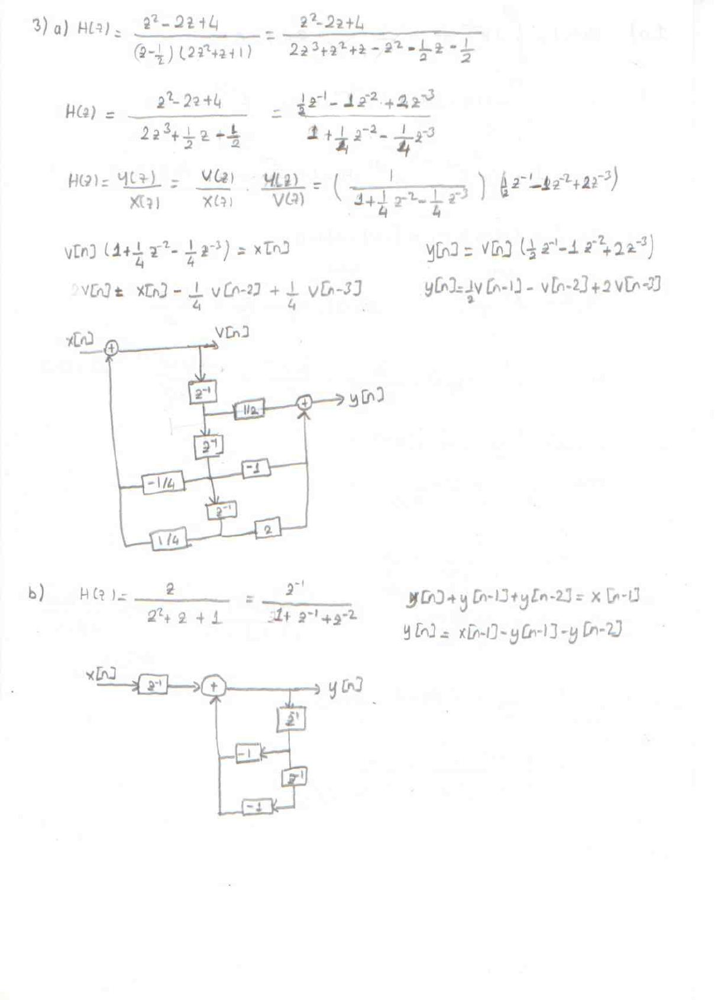
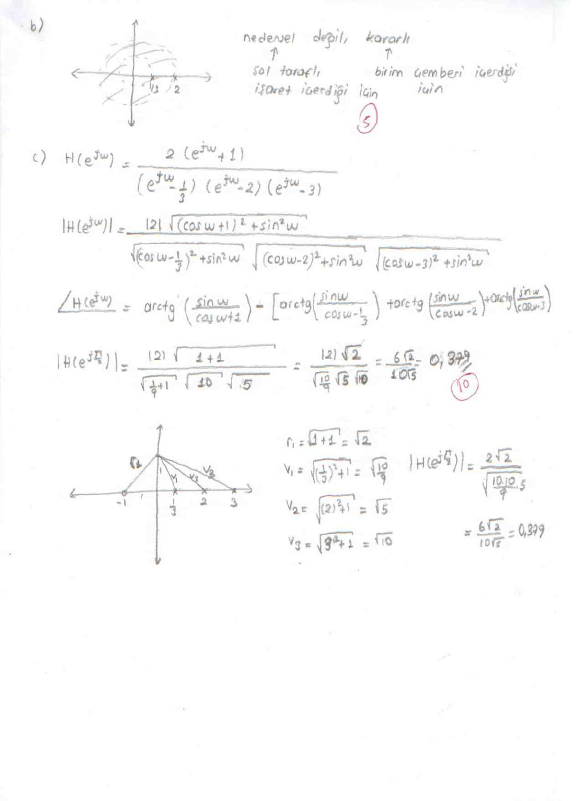

· EEM308
EEM308 Sinyaller ve Sistemler II: Ara Sınav Cevap Anahtarı (Laplace ve z-Dönüşümü)
EEM308 – Sinyaller ve Sistemler II · 22.03.2015 · 16.10.2026
Bu yazı, Başkent Üniversitesi EEM 308 Sinyaller ve Sistemler II dersinin bir ara sınavına ait dört sayfalık el yazısı cevap anahtarını aktarıyor. Belge, dersin 2014 bahar dönemi örnek soruları arasında, aynı dönemin kısa sınav cevap anahtarlarıyla birlikte duruyordu; el yazısı da aynı. Soru kâğıdı yok; sorular cevaplardan anlaşılabildiği ölçüde aşağıda belirtildi. Daire içindeki sayılar bölüm puanlarını gösteriyor. Taranmış sayfaların PDF'i yazının sonunda indirilebilir.
1) Tek taraflı Laplace dönüşümü
a) X_I(s) = ∫₀^∞ 1·e⁻ˢᵗ dt = 1/s, Re(s) > 0
b) x(t) = δ(t + 1) + δ(t) + e^{−2(t+3)} u(t + 1). Tek taraflı dönüşümde integral 0'dan başladığı için δ(t + 1) katkı vermez, δ(t) 1 verir:
X_I(s) = 1 + ∫₀^∞ e^{−2(t+3)} e⁻ˢᵗ dt = 1 + e⁻⁶/(s + 2), Re(s) > −2
c) x(t) = 8 cos(πt/2) u(t) ∗ [u(t) − u(t − 1)]. Konvolüsyon, dönüşümlerin çarpımıdır:
- X_I1(s) = 8s / (s² + π²/4)
- X_I2(s) = 1/s − e⁻ˢ/s = (1 − e⁻ˢ)/s
X_I(s) = 8(1 − e⁻ˢ) / (s² + π²/4), Re(s) > 0
2) Özfonksiyon yöntemiyle transfer fonksiyonu
Karmaşık üstel x(t) = e^{s_k t} bir LTI sistemin özfonksiyonudur: y(t) = H(s_k) e^{s_k t}. x(t) = e²ᵗ için y(t) = (1/6)e²ᵗ verildiğinden H(2) = 1/6.
Cevaptan anlaşıldığı kadarıyla soruda dh/dt + 2h(t) = e^{−4t}u(t) + b·u(t) ilişkisi veriliyor; Laplace dönüşümü:
(s + 2)H(s) = 1/(s + 4) + b/s ⇒ H(s) = (s + b(s + 4)) / (s(s + 4)(s + 2))
H(2) = (2 + 6b)/(2·6·4) = 1/6 ⇒ 2 + 6b = 8 ⇒ b = 1
H(s) = 2(s + 2) / (s(s + 4)(s + 2)) = 2 / (s(s + 4))
3) Blok diyagramları
a) H(z) = (z² − 2z + 4) / ((z − ½)(2z² + z + 1)). Payda açılırsa 2z³ + ½z − ½; pay ve payda 2z³'e bölünürse:
H(z) = (½z⁻¹ − z⁻² + 2z⁻³) / (1 + ¼z⁻² − ¼z⁻³)
Ara değişken v[n] ile (doğrudan biçim II):
- V(z)/X(z) = 1/(1 + ¼z⁻² − ¼z⁻³) ⇒ v[n] = x[n] − ¼v[n − 2] + ¼v[n − 3]
- Y(z)/V(z) = ½z⁻¹ − z⁻² + 2z⁻³ ⇒ y[n] = ½v[n − 1] − v[n − 2] + 2v[n − 3]
b) H(z) = z/(z² + z + 1) = z⁻¹/(1 + z⁻¹ + z⁻²) ⇒ y[n] + y[n − 1] + y[n − 2] = x[n − 1], yani y[n] = x[n − 1] − y[n − 1] − y[n − 2].

4) Konvolüsyon (z-dönüşümüyle)
Y(z) = X(z)H(z) ile:
- X(z) = 1 + 2z⁻¹ − z⁻² − 2z⁻³ + z⁻⁴ + 2z⁻⁵
- H(z) = z⁻¹ + 2z⁻²
Y(z) = z⁻¹ + 4z⁻² + 3z⁻³ − 4z⁻⁴ − 3z⁻⁵ + 4z⁻⁶ + 4z⁻⁷
| n | 0 | 1 | 2 | 3 | 4 | 5 | 6 | 7 |
|---|---|---|---|---|---|---|---|---|
| y[n] | 0 | 1 | 4 | 3 | −4 | −3 | 4 | 4 |
5) Kısmi kesirler, nedensellik ve frekans yanıtı (8 + 7 + 5 + 5 + 10 puan)
a) H(z) = 2(z + 1) / ((z − ⅓)(z − 2)(z − 3)) = A/(z − ⅓) + B/(z − 2) + C/(z − 3)
- A = 2(4/3) / ((−5/3)(−8/3)) = 3/5
- B = 2(3) / ((5/3)(−1)) = −18/5
- C = 2(4) / ((8/3)(1)) = 3
Sistem kararlı kabul edildiğinden ROC birim çemberi içermelidir: 1/3 < |z| < 2. Cevap anahtarındaki darbe yanıtı:
h[n] = (3/5)(1/3)ⁿ u[n] − [3·(3)ⁿ − (18/5)(2)ⁿ] u[−n − 1]
Not: Bu ifade, A/(z − a) terimleri A/(1 − az⁻¹) gibi ters dönüştürülerek bulunmuş ve doğru yanıtın bir örnek ilerisini veriyor (z·H(z)'nin ters dönüşümü). A/(z − a) = A z⁻¹/(1 − az⁻¹) olduğundan doğrusu h[n] = (3/5)(1/3)ⁿ⁻¹ u[n − 1] + [(18/5)·2ⁿ⁻¹ − 3ⁿ] u[−n] = (9/5)(1/3)ⁿ u[n − 1] + [(9/5)·2ⁿ − 3ⁿ] u[−n]'dir. Bu sonuç, birim çember üzerinde Σ h[n] e^{−jωn} toplamının H(e^{jω}) ile sayısal olarak karşılaştırılmasıyla doğrulandı.
b) Sistem nedensel değildir (ROC halka biçiminde, darbe yanıtı sol taraflı işaret içeriyor) ve kararlıdır (ROC birim çemberi içeriyor).
c) Frekans yanıtı:
H(e^{jω}) = 2(e^{jω} + 1) / ((e^{jω} − ⅓)(e^{jω} − 2)(e^{jω} − 3))
| H(e^{jω}) | = 2√((cos ω + 1)² + sin²ω) / [√((cos ω − ⅓)² + sin²ω) · √((cos ω − 2)² + sin²ω) · √((cos ω − 3)² + sin²ω)] |
|---|
∠H(e^{jω}) = arctan(sin ω/(cos ω + 1)) − [arctan(sin ω/(cos ω − ⅓)) + arctan(sin ω/(cos ω − 2)) + arctan(sin ω/(cos ω − 3))]
ω = π/2'de (z = j) sıfır ve kutuplardan z = j noktasına çizilen vektörlerin boyları: sıfır için r₁ = √2, kutuplar için v₁ = √(10/9), v₂ = √5, v₃ = √10. Böylece:
|H(e^{jπ/2})| = 2√2 / (√(10/9)·√5·√10) = 6√2/(10√5) ≈ 0,379
